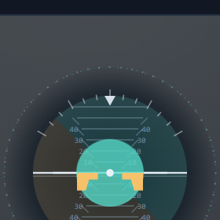
p = 0.05（刚开始推进）
本页只是静态对照：用于快速比较"形状本身特不特别"。真正的判断请打开活页面看动效（ladder · azimuth · fan · moire）。

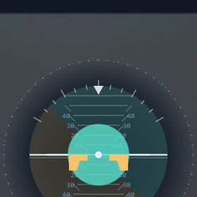
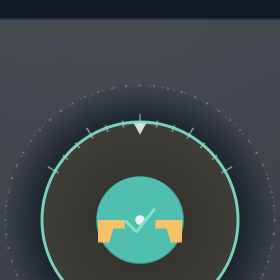
形状要点：圆窗口里唯一在动的是一条带刻度的地平线（密排横线 + 两侧对称小勾 + 两侧数字 + 青/琥珀色域分界）；机翼、中心点、顶部背向刻度全部钉死。完成态＝地面退出、地平线锁中位（"球回正"）。
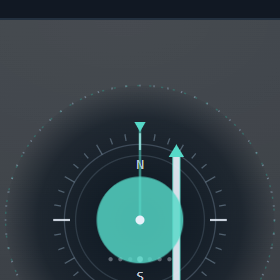
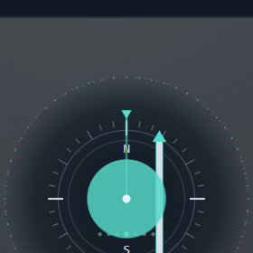
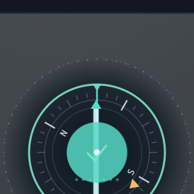
形状要点：会转的罗盘卡（36 分格疏密三档 + N/E/S/W + 琥珀目标箭头）+ 会横移的竖直长杆（上下双 V 尖，压着 7 颗航道偏差点）+ 固定 lubber line。两个自由度互不干扰。
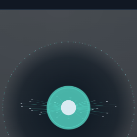
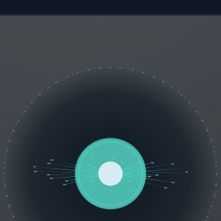
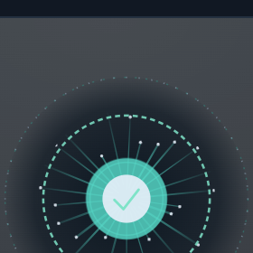
形状要点：26 根长短不一、带抖动的射线从同一点发散，每根末端一颗像素点，线本身是"根亮末淡"的径向渐变。整体轮廓是不规则星芒，不是圆环也不是规整扇形。完成态＝径迹长到捕获虚线环。
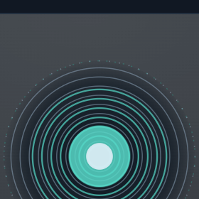
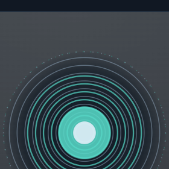
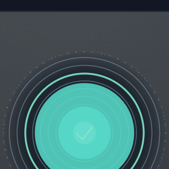
形状要点：静态栅 A（9 环 / 步长 9.2）叠动态栅 B（15 环 / 步长 6.05）。进度＝B 整组缩放，即两层周期差。你会看到粗条纹在滑、中心那只"目"随进度长大。完成态＝栅收进圆心后淡出，留实心亮盘。
⚠️ 生成这一版时视觉后端全部被限流（VISION_UNSUPPORTED_BACKEND），所以我没有用眼睛看过这 4 张图——静帧与动效的"机器可验证部分"（tick 递增、计算样式逐帧变化、像素在两帧之间确实不同）已全部通过，但好不好看必须由你判断。